Schede didattiche classe quarta primaria
2261 schede didattiche per la classe quarta primaria: comprensione del testo, ascolto e lessico, da stampare (PDF) con soluzioni.
2.261 materiali
Tema
Per tema: Animali e natura · Tecnologia · Matematica
Computer – Scheda didattica classe quarta e quinta: testo con spazi vuoti e crucipuzzle
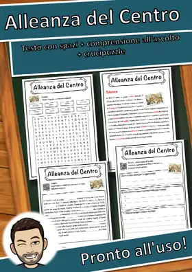
Alleanza del Centro – Scheda didattica classe quarta e quinta: testo con spazi vuoti e crucipuzzle

Solanum lycopersicum – Scheda didattica classe quarta e quinta: testo con spazi vuoti e crucipuzzle
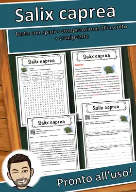
Salix caprea – Scheda didattica classe quarta e quinta: testo con spazi vuoti e crucipuzzle

Dasypodidae – Scheda didattica classe quarta e quinta: testo con spazi vuoti e crucipuzzle
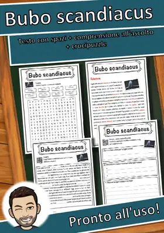
Bubo scandiacus – Scheda didattica classe quarta e quinta: testo con spazi vuoti e crucipuzzle
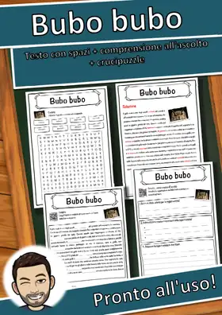
Bubo bubo – Scheda didattica classe quarta e quinta: testo con spazi vuoti e crucipuzzle

Efesto – Scheda didattica classe quarta e quinta: testo con spazi vuoti e crucipuzzle
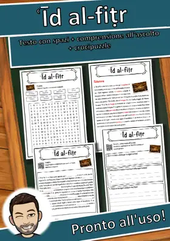
ʿĪd al-fiṭr – Scheda didattica classe quarta e quinta: testo con spazi vuoti e crucipuzzle
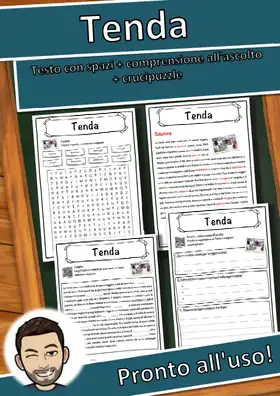
Tenda – Scheda didattica classe quarta e quinta: testo con spazi vuoti e crucipuzzle

Zagabria – Scheda didattica classe quarta e quinta: testo con spazi vuoti e crucipuzzle
Tubercolosi – Scheda didattica classe quarta e quinta: testo con spazi vuoti e crucipuzzle

Trasporto a fune – Scheda didattica classe quarta e quinta: testo con spazi vuoti e crucipuzzle
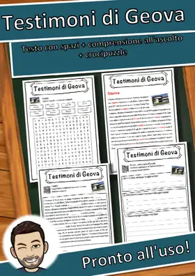
Testimoni di Geova – Scheda didattica classe quarta e quinta: testo con spazi vuoti e crucipuzzle

Terbio – Scheda didattica classe quarta e quinta: testo con spazi vuoti e crucipuzzle

Teoria del complotto – Scheda didattica classe quarta e quinta: testo con spazi vuoti e crucipuzzle
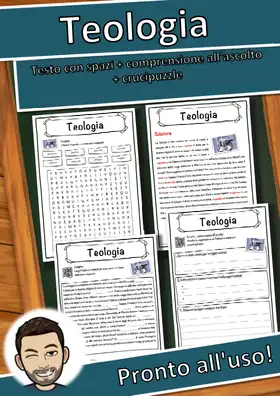
Teologia – Scheda didattica classe quarta e quinta: testo con spazi vuoti e crucipuzzle

Tennesso – Scheda didattica classe quarta e quinta: testo con spazi vuoti e crucipuzzle
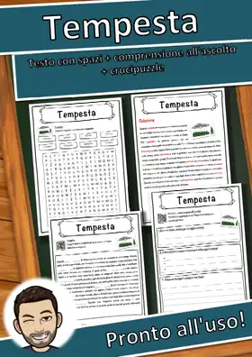
Tempesta – Scheda didattica classe quarta e quinta: testo con spazi vuoti e crucipuzzle
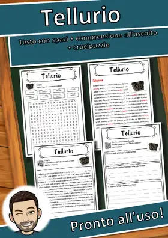
Tellurio – Scheda didattica classe quarta e quinta: testo con spazi vuoti e crucipuzzle
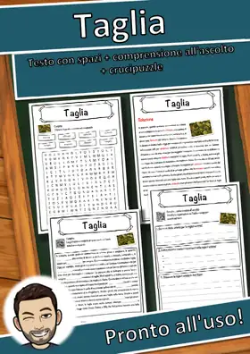
Taglia – Scheda didattica classe quarta e quinta: testo con spazi vuoti e crucipuzzle
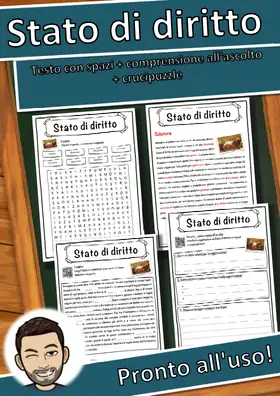
Stato di diritto – Scheda didattica classe quarta e quinta: testo con spazi vuoti e crucipuzzle
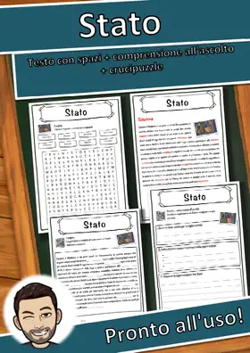
Stato – Scheda didattica classe quarta e quinta: testo con spazi vuoti e crucipuzzle
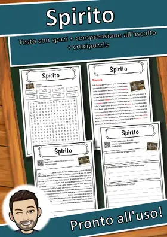
Spirito – Scheda didattica classe quarta e quinta: testo con spazi vuoti e crucipuzzle
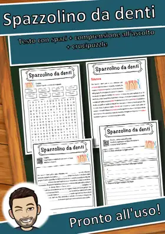
Spazzolino da denti – Scheda didattica classe quarta e quinta: testo con spazi vuoti e crucipuzzle
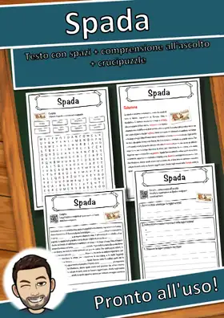
Spada – Scheda didattica classe quarta e quinta: testo con spazi vuoti e crucipuzzle
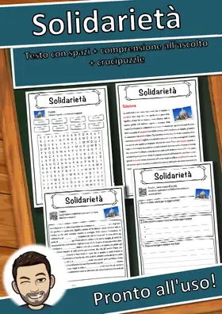
Solidarietà – Scheda didattica classe quarta e quinta: testo con spazi vuoti e crucipuzzle
Skateboard – Scheda didattica classe quarta e quinta: testo con spazi vuoti e crucipuzzle

Pietro – Scheda didattica classe quarta e quinta: testo con spazi vuoti e crucipuzzle
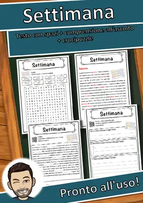
Settimana – Scheda didattica classe quarta e quinta: testo con spazi vuoti e crucipuzzle
Seta – Scheda didattica classe quarta e quinta: testo con spazi vuoti e crucipuzzle
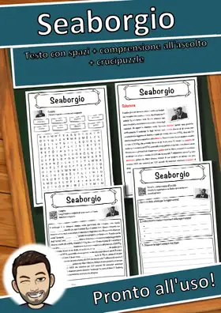
Seaborgio – Scheda didattica classe quarta e quinta: testo con spazi vuoti e crucipuzzle
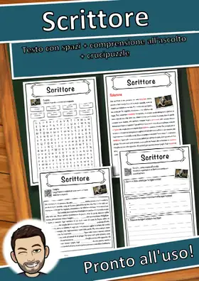
Scrittore – Scheda didattica classe quarta e quinta: testo con spazi vuoti e crucipuzzle
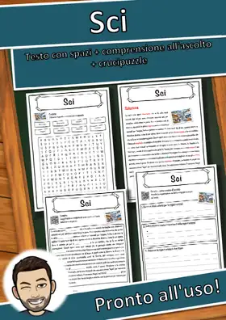
Sci – Scheda didattica classe quarta e quinta: testo con spazi vuoti e crucipuzzle
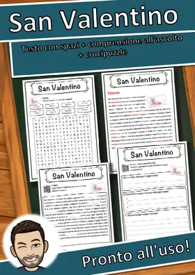
San Valentino – Scheda didattica classe quarta e quinta: testo con spazi vuoti e crucipuzzle

San Pietroburgo – Scheda didattica classe quarta e quinta: testo con spazi vuoti e crucipuzzle

Salto con gli sci – Scheda didattica classe quarta e quinta: testo con spazi vuoti e crucipuzzle
Corteccia – Scheda didattica classe quarta e quinta: testo con spazi vuoti e crucipuzzle
Riciclaggio di denaro – Scheda didattica classe quarta e quinta: testo con spazi vuoti e crucipuzzle

Realismo – Scheda didattica classe quarta e quinta: testo con spazi vuoti e crucipuzzle
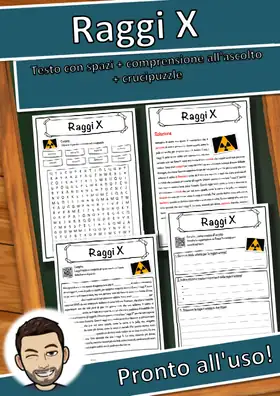
Raggi X – Scheda didattica classe quarta e quinta: testo con spazi vuoti e crucipuzzle
Papa – Scheda didattica classe quarta e quinta: testo con spazi vuoti e crucipuzzle
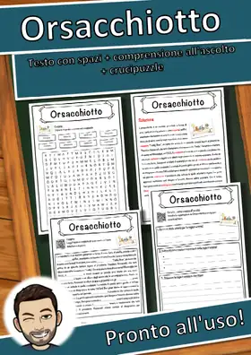
Orsacchiotto – Scheda didattica classe quarta e quinta: testo con spazi vuoti e crucipuzzle
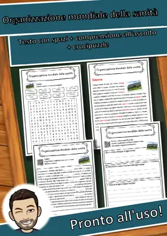
Organizzazione mondiale della sanità – Scheda didattica classe quarta e quinta: testo con spazi vuoti e crucipuzzle

Ordine teutonico – Scheda didattica classe quarta e quinta: testo con spazi vuoti e crucipuzzle

Occhio – Scheda didattica classe quarta e quinta: testo con spazi vuoti e crucipuzzle

Moby Dick – Scheda didattica classe quarta e quinta: testo con spazi vuoti e crucipuzzle

Wilderness – Scheda didattica classe quarta e quinta: testo con spazi vuoti e crucipuzzle
Nessun materiale trovato: prova con un'altra parola o un altro filtro.